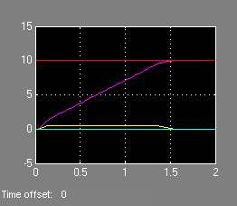

This demonstration shows how to use the MPC toolbox to control a simplified model of the dynamics of an AFTI-F16 aicraft with saturating actuators [1,2].
References:
[1] P. Kapasouris, M. Athans and G. Stein, "Design of feedback control systems for unstable plants with saturating
actuators," Proc. IFAC Symp. on Nonlinear Control System
Design, Pergamon Press, pp.302--307, 1990
[2] A. Bemporad, A. Casavola, and E. Mosca, "Nonlinear
control of constrained linear systems via predictive reference management,"
IEEE Trans. Automatic Control, vol. AC-42, no. 3, pp. 340-349,
1997
Author: A. Bemporad
The linearized open-loop dynamic model for the attack and pitch angles as a function of the elevator and flaperon angles is
Ts=.05; %Sampling time Tstop=40*Ts; %Simulation time A=[-.0151 -60.5651 0 -32.174; -.0001 -1.3411 .9929 0; .00018 43.2541 -.86939 0; 0 0 1 0]; B=[-2.516 -13.136; -.1689 -.2514; -17.251 -1.5766; 0 0]; C=[0 1 0 0; 0 0 0 1]; D=[0 0; 0 0]; sys=ss(A,B,C,D); x0=zeros(4,1);
The manipulated variables are the elevator and flaperon angles, the attack and pitch angles are measured outputs to be regulated. The open-loop response of the system is unstable.
Both inputs are constrained between +/- 25 deg. The task is to get zero offset for piecewise-constant references, while avoiding instability due to input saturation. We also add constraints on the outputs to limit undershoots.
Define the MPC object
clear MV OV MV(1)=struct('Min',-25,'Max',25); MV(2)=struct('Min',-25,'Max',25); OV(1)=struct('Min',-0.5,'Max',0.5); OV(2)=struct('Min',-100,'Max',100); Weights=struct('Input',[0 0],'InputRate',[0 0],'Output',[10 10]); p=10; % Prediction horizon moves=3; % Control horizon mpcafti=mpc(sys,Ts,p,moves); mpcafti.Weights=Weights; mpcafti.MV=MV; mpcafti.OV=OV;
Run a simulation using Simulink
mpc_afti16
sim('mpc_afti16',Tstop)
manipulated variables
measured outputs and references
